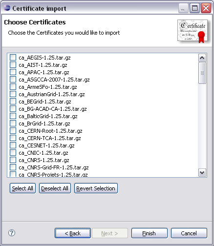

To import a list of certificates into the g-Eclipse certificate manager you can make use of the Import... button in the Security Preference Page. This will bring up the Certificate Import Wizard. There you'll find a list of available certificate repositories. This list is extensible with a dedicated extension point. By default the list should look similar to the following screenshot:
Besides the various repositories of the Grid Policy Management Authorities this list also contains the Gilda CA certificate that is mandatory for using the Gilda training infrastructure.
By selecting one of the repositories and pressing Next the selected repository is queried for available certificates. Depending on the internet connection this may take some time. Afterwards the second wizard page is opened showing the list of all certificates that are available in the formerly specified repository:

Here one can now select the certificates that should be imported. When pressing Finish the selected certificates will be downloaded and converted to the format that is used internally by the certificate manager. The imported certificates should then be visible in the Security Preference Page as certificates with trust state "Always Trusted".